Clases en World Of Warcraft
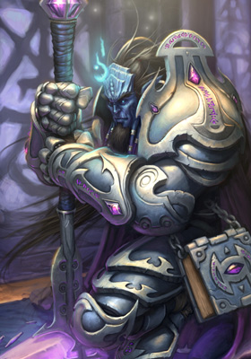
Los paladines se colocan justo delante de sus enemigos, confiando en su pesada armadura y la sanación para
poder sobrevivir a una lluvia de ataques. Ya sea con enormes escudos o con aplastantes armas a dos manos,
los paladines pueden aguantar zarpas y espadas de sus compañeros más débiles, pero deben usar la magia
sanadora con cuidado para asegurarse de que se mantienen en pie.
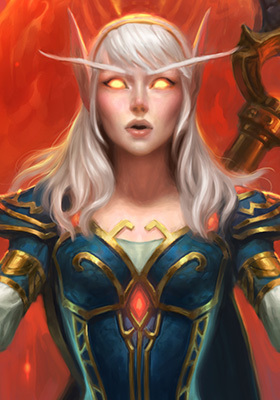
Los magos destruyen a sus enemigos con encantamientos arcanos. Aunque controlan poderosos hechizos ofensivos,
los magos son frágiles y su armadura es ligera, lo que los hace particularmente vulnerables a los ataques a
corta distancia. Los magos sabios usan sus hechizos con cuidado para mantener a sus enemigos a distancia o
retenerlos en el lugar.
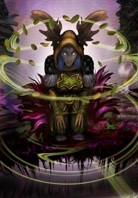
Los druidas poseen una gran variedad de estilos de combate. Pueden llevar a cabo todos los roles: sanación,
tanque, daño cuerpo a cuerpo y daño a distancia. Es vital que los druidas adopten la forma adecuada para
cada situación ya que cada forma conlleva un propósito diferente.
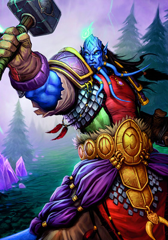
Durante el combate, el chamán coloca totems de control y daño en el suelo para maximizar su efectividad y
ponerle las cosas más difíciles a los enemigos Los chamanes son lo suficientemente versátiles para luchar
contra los enemigos de cerca o a distancia, pero los chamanes sabios eligen su camino de ataque basado en
los puntos fuertes y débiles de sus enemigos.
Sea cual sea el papel que desempeñen en el combate, los monjes suelen centrarse en sus pies y manos para las
acciones principales, mientras que su fuerte conexión con su chi interno les vale para potenciar sus
facultades. Además, los monjes son capaces de sanar a sus aliados al tiempo que infligen daño a sus
enemigos.
Galería
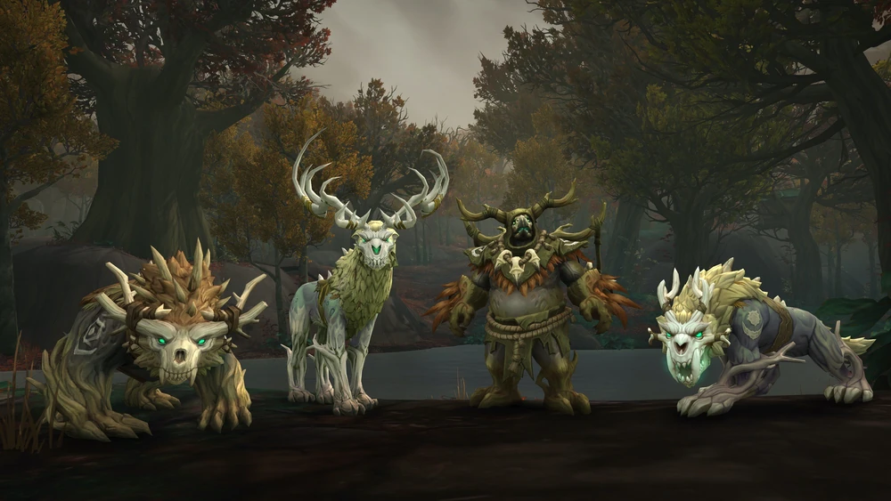
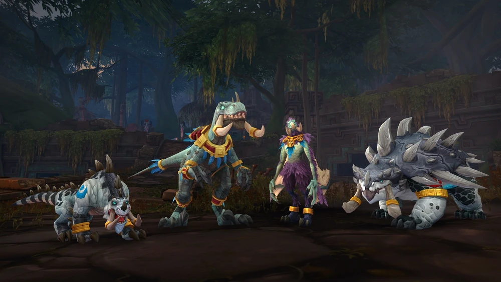
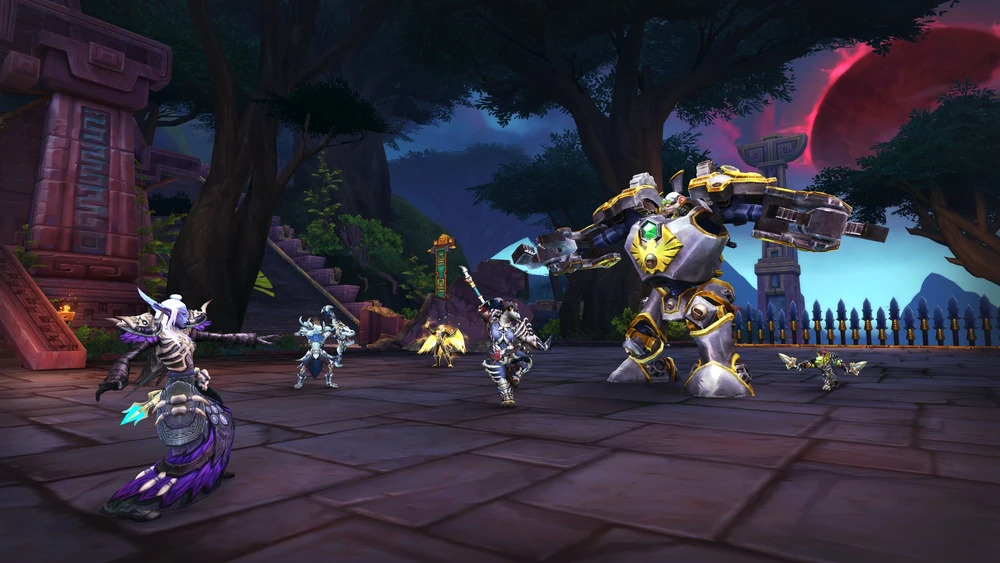
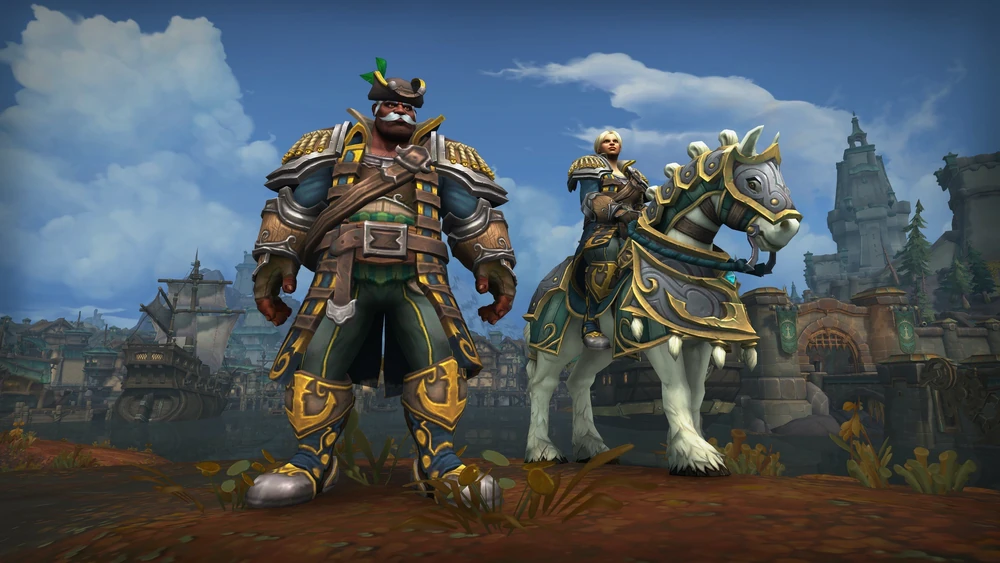
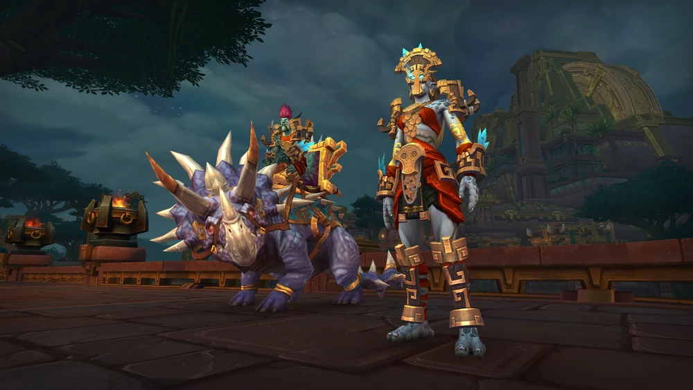
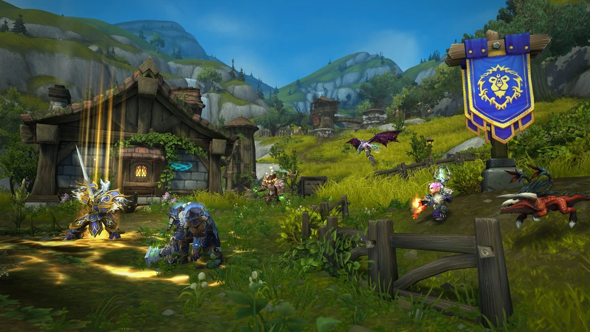
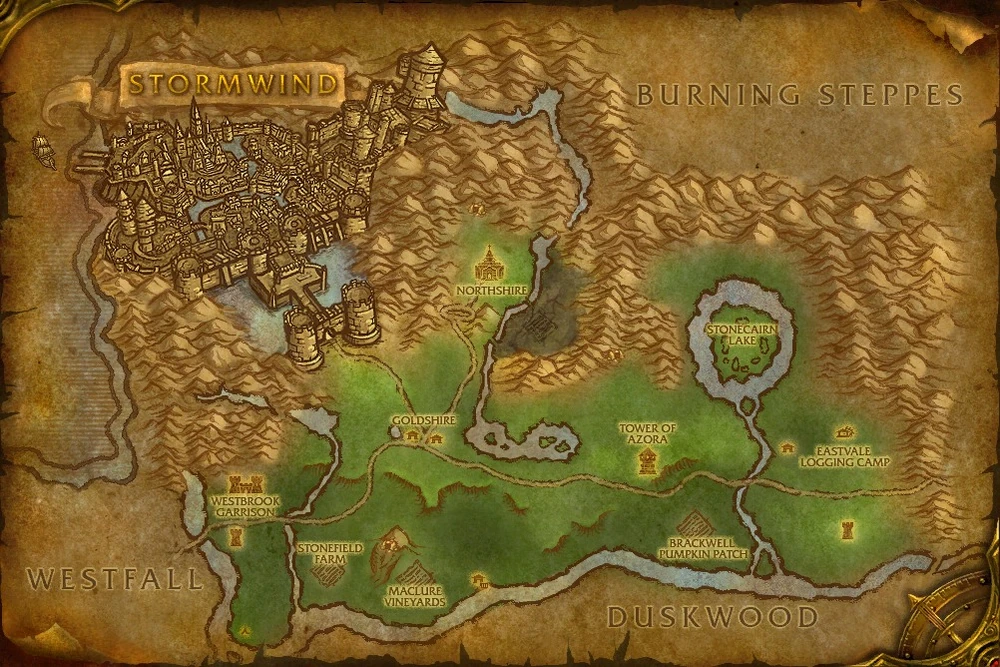
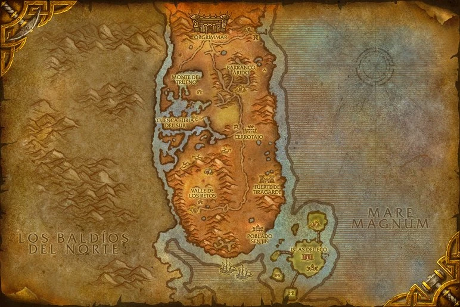

Listado de incidencias
| Nombre |
Apellidos |
Teléfono |
Correo |
Incidencia |
¿Urgente? |